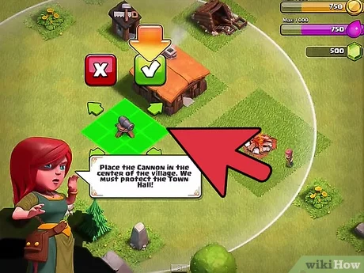

<section>
  <article>
    <dt>¿Tienes conocimiento en videojuegos de estrategia y de construccion de aldeas?</dt>
    <dd>Un juego de construccion de aldeas requiere tiempo en el caso de no tener conocimento previo seguir con el cuestionario.</dd>
    <dt>¿Cual es tu primera estructura defensiva?</dt> 
    <dd> El cañon </dd>
    <dt>¿Que se el ayuntamiento?</dt> 
    <dd> El Ayuntamiento es la construcción más importante. El Ayuntamiento te deja desbloquear nuevas construcciones cuando lo mejorás. </dd>
    <dt>¿Como mejorar estructuras como el Ayutamiento?</dt> 
    <dd> Se requiere oro y elixir pero ademas se requiere esperar un tiempo para que la construccion o mejorara se concluya. </p>
    <dt>¿Para mejorar el ayuntamiento que recursos necesitas?</dd> 
    <dd> los recuersos que se requieren son el oro y elixir </dd>
    
  </article>
</section>
</html>